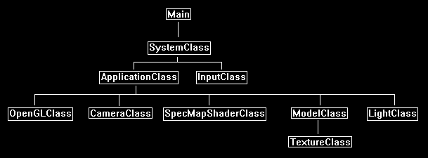

This tutorial will cover how to implement specular mapping in OpenGL 4.0 using GLSL as well as how to combine it with normal mapping.
The code in this tutorial is a combination of the code in the normal map tutorial and the specular lighting tutorial.
Specular mapping is the process of using a texture or alpha layer of a texture as a look up table for per-pixel specular lighting intensity.
This process is identical to how light mapping works except that it is used for specular highlights instead.
For example, we may use a color texture as follows:

And a normal map for the texture as follows:

And then we will introduce the new specular map texture for specular light intensity such as follows:

We use the grey scale in the specular map to determine the intensity of specular light at each pixel.
Notice the image will allow each square on the base image to have its own specular intensity.
And since the image is normal mapped, it will highlight the bumps giving a very realistic surface such as the following:

Framework
The frame work has only changed slightly since the previous tutorial. It now has a SpecMapShaderClass instead of a NormalMapShaderClass.

We will start the tutorial by looking at the specular map GLSL shader code:
Specmap.vs
////////////////////////////////////////////////////////////////////////////////
// Filename: specmap.vs
////////////////////////////////////////////////////////////////////////////////
#version 400
/////////////////////
// INPUT VARIABLES //
/////////////////////
in vec3 inputPosition;
in vec2 inputTexCoord;
in vec3 inputNormal;
in vec3 inputTangent;
in vec3 inputBinormal;
The shader uses specular lighting so you will see the viewDirection and cameraPosition are used in the shader again, along with all the normal mapping variables.
//////////////////////
// OUTPUT VARIABLES //
//////////////////////
out vec2 texCoord;
out vec3 normal;
out vec3 tangent;
out vec3 binormal;
out vec3 viewDirection;
///////////////////////
// UNIFORM VARIABLES //
///////////////////////
uniform mat4 worldMatrix;
uniform mat4 viewMatrix;
uniform mat4 projectionMatrix;
uniform vec3 cameraPosition;
////////////////////////////////////////////////////////////////////////////////
// Vertex Shader
////////////////////////////////////////////////////////////////////////////////
void main(void)
{
vec4 worldPosition;
// Calculate the position of the vertex against the world, view, and projection matrices.
gl_Position = vec4(inputPosition, 1.0f) * worldMatrix;
gl_Position = gl_Position * viewMatrix;
gl_Position = gl_Position * projectionMatrix;
// Store the texture coordinates for the pixel shader.
texCoord = inputTexCoord;
// Calculate the normal vector against the world matrix only and then normalize the final value.
normal = inputNormal * mat3(worldMatrix);
normal = normalize(normal);
// Calculate the tangent vector against the world matrix only and then normalize the final value.
tangent = inputTangent * mat3(worldMatrix);
tangent = normalize(tangent);
// Calculate the binormal vector against the world matrix only and then normalize the final value.
binormal = inputBinormal * mat3(worldMatrix);
binormal = normalize(binormal);
For specular lighting calculations we will need the view direction calculated and passed into the pixel shader.
// Calculate the position of the vertex in the world.
worldPosition = vec4(inputPosition, 1.0f) * worldMatrix;
// Determine the viewing direction based on the position of the camera and the position of the vertex in the world.
viewDirection = cameraPosition.xyz - worldPosition.xyz;
// Normalize the viewing direction vector.
viewDirection = normalize(viewDirection);
}
Specmap.ps
////////////////////////////////////////////////////////////////////////////////
// Filename: specmap.ps
////////////////////////////////////////////////////////////////////////////////
#version 400
/////////////////////
// INPUT VARIABLES //
/////////////////////
in vec2 texCoord;
in vec3 normal;
in vec3 tangent;
in vec3 binormal;
in vec3 viewDirection;
//////////////////////
// OUTPUT VARIABLES //
//////////////////////
out vec4 outputColor;
The specular map shader requires three textures.
The first texture is the color texture.
The second texture is the normal map.
And the third texture is the specular map.
Also, the specular lighting variables specularColor and specularPower are added to this shader.
///////////////////////
// UNIFORM VARIABLES //
///////////////////////
uniform sampler2D shaderTexture1;
uniform sampler2D shaderTexture2;
uniform sampler2D shaderTexture3;
uniform vec3 lightDirection;
uniform vec4 diffuseLightColor;
uniform vec4 specularColor;
uniform float specularPower;
////////////////////////////////////////////////////////////////////////////////
// Pixel Shader
////////////////////////////////////////////////////////////////////////////////
void main(void)
{
vec4 textureColor;
vec4 bumpMap;
vec3 bumpNormal;
vec3 lightDir;
float lightIntensity;
vec4 color;
vec4 specularIntensity;
vec3 reflection;
float specValue;
vec4 specular;
The first part of the shader is the regular normal map shader code from the previous tutorial.
// Sample the pixel color from the texture using the sampler at this texture coordinate location.
textureColor = texture(shaderTexture1, texCoord);
// Sample the pixel from the normal map.
bumpMap = texture(shaderTexture2, texCoord);
// Expand the range of the normal value from (0, +1) to (-1, +1).
bumpMap = (bumpMap * 2.0f) - 1.0f;
// Calculate the normal from the data in the normal map.
bumpNormal = (bumpMap.x * tangent) + (bumpMap.y * binormal) + (bumpMap.z * normal);
// Normalize the resulting bump normal.
bumpNormal = normalize(bumpNormal);
// Invert the light direction for calculations.
lightDir = -lightDirection;
// Calculate the amount of light on this pixel based on the normal map value.
lightIntensity = clamp(dot(bumpNormal, lightDir), 0.0f, 1.0f);
// Determine the final amount of diffuse color based on the diffuse color combined with the light intensity.
color = clamp((diffuseLightColor * lightIntensity), 0.0f, 1.0f);
// Combine the final light color with the texture color.
color = color * textureColor;
If the light intensity is greater than zero, we will do specular light calculations.
if(lightIntensity > 0.0f)
{
Here is the key part where we sample the specular map texture for the intensity of specular light at this pixel.
// Sample the pixel from the specular map texture.
specularIntensity = texture(shaderTexture3, texCoord);
The next important part is we have changed the specular reflection calculation to use the normal map instead of the regular input normal.
This way the specular will work off the bumps from the normal map instead of the smooth surface from just the regular normal value.
// Calculate the reflection vector based on the light intensity, normal vector, and light direction.
reflection = normalize(2.0f * lightIntensity * bumpNormal - lightDir);
// Determine the amount of specular light based on the reflection vector, viewing direction, and specular power.
specValue = pow(clamp(dot(reflection, viewDirection), 0.0f, 1.0f), specularPower);
specular = vec4(specValue, specValue, specValue, 1.0f);
Now that we have the amount of specular light at this pixel, we then multiply it by the specular intensity from the specular map to get a final value.
// Use the specular map to determine the intensity of specular light at this pixel.
specular = specular * specularIntensity;
// Multiply the amount of specular light by the input specular color to get the final specular color value.
specular = specular * specularColor;
// Add the specular component last to the output color.
color = clamp(color + specular, 0.0f, 1.0f);
}
outputColor = color;
}
Specmapshaderclass.h
The SpecMapShaderClass is just the NormalMapShaderClass modified slightly from the previous tutorial.
////////////////////////////////////////////////////////////////////////////////
// Filename: specmapshaderclass.h
////////////////////////////////////////////////////////////////////////////////
#ifndef _SPECMAPSHADERCLASS_H_
#define _SPECMAPSHADERCLASS_H_
//////////////
// INCLUDES //
//////////////
#include <iostream>
using namespace std;
///////////////////////
// MY CLASS INCLUDES //
///////////////////////
#include "openglclass.h"
////////////////////////////////////////////////////////////////////////////////
// Class name: SpecMapShaderClass
////////////////////////////////////////////////////////////////////////////////
class SpecMapShaderClass
{
public:
SpecMapShaderClass();
SpecMapShaderClass(const SpecMapShaderClass&);
~SpecMapShaderClass();
bool Initialize(OpenGLClass*);
void Shutdown();
bool SetShaderParameters(float*, float*, float*, float*, float*, float*, float*, float);
private:
bool InitializeShader(char*, char*);
void ShutdownShader();
char* LoadShaderSourceFile(char*);
void OutputShaderErrorMessage(unsigned int, char*);
void OutputLinkerErrorMessage(unsigned int);
private:
OpenGLClass* m_OpenGLPtr;
unsigned int m_vertexShader;
unsigned int m_fragmentShader;
unsigned int m_shaderProgram;
};
#endif
Specmapshaderclass.cpp
////////////////////////////////////////////////////////////////////////////////
// Filename: specmapshaderclass.cpp
////////////////////////////////////////////////////////////////////////////////
#include "specmapshaderclass.h"
SpecMapShaderClass::SpecMapShaderClass()
{
m_OpenGLPtr = 0;
}
SpecMapShaderClass::SpecMapShaderClass(const SpecMapShaderClass& other)
{
}
SpecMapShaderClass::~SpecMapShaderClass()
{
}
bool SpecMapShaderClass::Initialize(OpenGLClass* OpenGL)
{
char vsFilename[128];
char psFilename[128];
bool result;
// Store the pointer to the OpenGL object.
m_OpenGLPtr = OpenGL;
We load the specmap.vs and specmap.ps GLSL shader files here.
// Set the location and names of the shader files.
strcpy(vsFilename, "../Engine/specmap.vs");
strcpy(psFilename, "../Engine/specmap.ps");
// Initialize the vertex and pixel shaders.
result = InitializeShader(vsFilename, psFilename);
if(!result)
{
return false;
}
return true;
}
void SpecMapShaderClass::Shutdown()
{
// Shutdown the shader.
ShutdownShader();
// Release the pointer to the OpenGL object.
m_OpenGLPtr = 0;
return;
}
bool SpecMapShaderClass::InitializeShader(char* vsFilename, char* fsFilename)
{
const char* vertexShaderBuffer;
const char* fragmentShaderBuffer;
int status;
// Load the vertex shader source file into a text buffer.
vertexShaderBuffer = LoadShaderSourceFile(vsFilename);
if(!vertexShaderBuffer)
{
return false;
}
// Load the fragment shader source file into a text buffer.
fragmentShaderBuffer = LoadShaderSourceFile(fsFilename);
if(!fragmentShaderBuffer)
{
return false;
}
// Create a vertex and fragment shader object.
m_vertexShader = m_OpenGLPtr->glCreateShader(GL_VERTEX_SHADER);
m_fragmentShader = m_OpenGLPtr->glCreateShader(GL_FRAGMENT_SHADER);
// Copy the shader source code strings into the vertex and fragment shader objects.
m_OpenGLPtr->glShaderSource(m_vertexShader, 1, &vertexShaderBuffer, NULL);
m_OpenGLPtr->glShaderSource(m_fragmentShader, 1, &fragmentShaderBuffer, NULL);
// Release the vertex and fragment shader buffers.
delete [] vertexShaderBuffer;
vertexShaderBuffer = 0;
delete [] fragmentShaderBuffer;
fragmentShaderBuffer = 0;
// Compile the shaders.
m_OpenGLPtr->glCompileShader(m_vertexShader);
m_OpenGLPtr->glCompileShader(m_fragmentShader);
// Check to see if the vertex shader compiled successfully.
m_OpenGLPtr->glGetShaderiv(m_vertexShader, GL_COMPILE_STATUS, &status);
if(status != 1)
{
// If it did not compile then write the syntax error message out to a text file for review.
OutputShaderErrorMessage(m_vertexShader, vsFilename);
return false;
}
// Check to see if the fragment shader compiled successfully.
m_OpenGLPtr->glGetShaderiv(m_fragmentShader, GL_COMPILE_STATUS, &status);
if(status != 1)
{
// If it did not compile then write the syntax error message out to a text file for review.
OutputShaderErrorMessage(m_fragmentShader, fsFilename);
return false;
}
// Create a shader program object.
m_shaderProgram = m_OpenGLPtr->glCreateProgram();
// Attach the vertex and fragment shader to the program object.
m_OpenGLPtr->glAttachShader(m_shaderProgram, m_vertexShader);
m_OpenGLPtr->glAttachShader(m_shaderProgram, m_fragmentShader);
// Bind the shader input variables.
m_OpenGLPtr->glBindAttribLocation(m_shaderProgram, 0, "inputPosition");
m_OpenGLPtr->glBindAttribLocation(m_shaderProgram, 1, "inputTexCoord");
m_OpenGLPtr->glBindAttribLocation(m_shaderProgram, 2, "inputNormal");
m_OpenGLPtr->glBindAttribLocation(m_shaderProgram, 3, "inputTangent");
m_OpenGLPtr->glBindAttribLocation(m_shaderProgram, 4, "inputBinormal");
// Link the shader program.
m_OpenGLPtr->glLinkProgram(m_shaderProgram);
// Check the status of the link.
m_OpenGLPtr->glGetProgramiv(m_shaderProgram, GL_LINK_STATUS, &status);
if(status != 1)
{
// If it did not link then write the syntax error message out to a text file for review.
OutputLinkerErrorMessage(m_shaderProgram);
return false;
}
return true;
}
void SpecMapShaderClass::ShutdownShader()
{
// Detach the vertex and fragment shaders from the program.
m_OpenGLPtr->glDetachShader(m_shaderProgram, m_vertexShader);
m_OpenGLPtr->glDetachShader(m_shaderProgram, m_fragmentShader);
// Delete the vertex and fragment shaders.
m_OpenGLPtr->glDeleteShader(m_vertexShader);
m_OpenGLPtr->glDeleteShader(m_fragmentShader);
// Delete the shader program.
m_OpenGLPtr->glDeleteProgram(m_shaderProgram);
return;
}
char* SpecMapShaderClass::LoadShaderSourceFile(char* filename)
{
FILE* filePtr;
char* buffer;
long fileSize, count;
int error;
// Open the shader file for reading in text modee.
filePtr = fopen(filename, "r");
if(filePtr == NULL)
{
return 0;
}
// Go to the end of the file and get the size of the file.
fseek(filePtr, 0, SEEK_END);
fileSize = ftell(filePtr);
// Initialize the buffer to read the shader source file into, adding 1 for an extra null terminator.
buffer = new char[fileSize + 1];
// Return the file pointer back to the beginning of the file.
fseek(filePtr, 0, SEEK_SET);
// Read the shader text file into the buffer.
count = fread(buffer, 1, fileSize, filePtr);
if(count != fileSize)
{
return 0;
}
// Close the file.
error = fclose(filePtr);
if(error != 0)
{
return 0;
}
// Null terminate the buffer.
buffer[fileSize] = '\0';
return buffer;
}
void SpecMapShaderClass::OutputShaderErrorMessage(unsigned int shaderId, char* shaderFilename)
{
long count;
int logSize, error;
char* infoLog;
FILE* filePtr;
// Get the size of the string containing the information log for the failed shader compilation message.
m_OpenGLPtr->glGetShaderiv(shaderId, GL_INFO_LOG_LENGTH, &logSize);
// Increment the size by one to handle also the null terminator.
logSize++;
// Create a char buffer to hold the info log.
infoLog = new char[logSize];
// Now retrieve the info log.
m_OpenGLPtr->glGetShaderInfoLog(shaderId, logSize, NULL, infoLog);
// Open a text file to write the error message to.
filePtr = fopen("shader-error.txt", "w");
if(filePtr == NULL)
{
cout << "Error opening shader error message output file." << endl;
return;
}
// Write out the error message.
count = fwrite(infoLog, sizeof(char), logSize, filePtr);
if(count != logSize)
{
cout << "Error writing shader error message output file." << endl;
return;
}
// Close the file.
error = fclose(filePtr);
if(error != 0)
{
cout << "Error closing shader error message output file." << endl;
return;
}
// Notify the user to check the text file for compile errors.
cout << "Error compiling shader. Check shader-error.txt for error message. Shader filename: " << shaderFilename << endl;
return;
}
void SpecMapShaderClass::OutputLinkerErrorMessage(unsigned int programId)
{
long count;
FILE* filePtr;
int logSize, error;
char* infoLog;
// Get the size of the string containing the information log for the failed shader compilation message.
m_OpenGLPtr->glGetProgramiv(programId, GL_INFO_LOG_LENGTH, &logSize);
// Increment the size by one to handle also the null terminator.
logSize++;
// Create a char buffer to hold the info log.
infoLog = new char[logSize];
// Now retrieve the info log.
m_OpenGLPtr->glGetProgramInfoLog(programId, logSize, NULL, infoLog);
// Open a file to write the error message to.
filePtr = fopen("linker-error.txt", "w");
if(filePtr == NULL)
{
cout << "Error opening linker error message output file." << endl;
return;
}
// Write out the error message.
count = fwrite(infoLog, sizeof(char), logSize, filePtr);
if(count != logSize)
{
cout << "Error writing linker error message output file." << endl;
return;
}
// Close the file.
error = fclose(filePtr);
if(error != 0)
{
cout << "Error closing linker error message output file." << endl;
return;
}
// Pop a message up on the screen to notify the user to check the text file for linker errors.
cout << "Error linking shader program. Check linker-error.txt for message." << endl;
return;
}
The SetShaderParameters function will add input for all the specular lighting variables.
bool SpecMapShaderClass::SetShaderParameters(float* worldMatrix, float* viewMatrix, float* projectionMatrix, float* lightDirection, float* diffuseLightColor, float* cameraPosition,
float* specularColor, float specularPower)
{
float tpWorldMatrix[16], tpViewMatrix[16], tpProjectionMatrix[16];
int location;
// Transpose the matrices to prepare them for the shader.
m_OpenGLPtr->MatrixTranspose(tpWorldMatrix, worldMatrix);
m_OpenGLPtr->MatrixTranspose(tpViewMatrix, viewMatrix);
m_OpenGLPtr->MatrixTranspose(tpProjectionMatrix, projectionMatrix);
// Install the shader program as part of the current rendering state.
m_OpenGLPtr->glUseProgram(m_shaderProgram);
// Set the world matrix in the vertex shader.
location = m_OpenGLPtr->glGetUniformLocation(m_shaderProgram, "worldMatrix");
if(location == -1)
{
cout << "World matrix not set." << endl;
}
m_OpenGLPtr ->glUniformMatrix4fv(location, 1, false, tpWorldMatrix);
// Set the view matrix in the vertex shader.
location = m_OpenGLPtr->glGetUniformLocation(m_shaderProgram, "viewMatrix");
if(location == -1)
{
cout << "View matrix not set." << endl;
}
m_OpenGLPtr->glUniformMatrix4fv(location, 1, false, tpViewMatrix);
// Set the projection matrix in the vertex shader.
location = m_OpenGLPtr->glGetUniformLocation(m_shaderProgram, "projectionMatrix");
if(location == -1)
{
cout << "Projection matrix not set." << endl;
}
m_OpenGLPtr->glUniformMatrix4fv(location, 1, false, tpProjectionMatrix);
We set the camera position for specular lighting calculations.
// Set the camera position in the vertex shader.
location = m_OpenGLPtr->glGetUniformLocation(m_shaderProgram, "cameraPosition");
if(location == -1)
{
cout << "Camera position not set." << endl;
}
m_OpenGLPtr->glUniform3fv(location, 1, cameraPosition);
Here we setup access to the three textures we will be using for the shader. They will be the base color, the normal map, and the specular map.
// Set the first texture in the pixel shader to use the data from the first texture unit.
location = m_OpenGLPtr->glGetUniformLocation(m_shaderProgram, "shaderTexture1");
if(location == -1)
{
cout << "Shader texture 1 not set." << endl;
}
m_OpenGLPtr->glUniform1i(location, 0);
// Set the second texture in the pixel shader to use the data from the second texture unit.
location = m_OpenGLPtr->glGetUniformLocation(m_shaderProgram, "shaderTexture2");
if(location == -1)
{
cout << "Shader texture 2 not set." << endl;
}
m_OpenGLPtr->glUniform1i(location, 1);
// Set the third texture in the pixel shader to use the data from the third texture unit.
location = m_OpenGLPtr->glGetUniformLocation(m_shaderProgram, "shaderTexture3");
if(location == -1)
{
cout << "Shader texture 3 not set." << endl;
}
m_OpenGLPtr->glUniform1i(location, 2);
// Set the light direction in the pixel shader.
location = m_OpenGLPtr->glGetUniformLocation(m_shaderProgram, "lightDirection");
if(location == -1)
{
cout << "Light direction not set." << endl;
}
m_OpenGLPtr->glUniform3fv(location, 1, lightDirection);
// Set the light color in the pixel shader.
location = m_OpenGLPtr->glGetUniformLocation(m_shaderProgram, "diffuseLightColor");
if(location == -1)
{
cout << "Diffuse light color not set." << endl;
}
m_OpenGLPtr->glUniform4fv(location, 1, diffuseLightColor);
And finally, we set the last two specular lighting variables needed for calculating specular lighting.
// Set the specular light power in the pixel shader.
location = m_OpenGLPtr->glGetUniformLocation(m_shaderProgram, "specularPower");
if(location == -1)
{
cout << "Specular power not set." << endl;
}
m_OpenGLPtr->glUniform1f(location, specularPower);
// Set the specular light color in the pixel shader.
location = m_OpenGLPtr->glGetUniformLocation(m_shaderProgram, "specularColor");
if(location == -1)
{
cout << "Specular color not set." << endl;
}
m_OpenGLPtr->glUniform4fv(location, 1, specularColor);
return true;
}
Applicationclass.h
We have added the new SpecularMapShaderClass to the ApplicationClass.
////////////////////////////////////////////////////////////////////////////////
// Filename: applicationclass.h
////////////////////////////////////////////////////////////////////////////////
#ifndef _APPLICATIONCLASS_H_
#define _APPLICATIONCLASS_H_
/////////////
// GLOBALS //
/////////////
const bool FULL_SCREEN = false;
const bool VSYNC_ENABLED = true;
const float SCREEN_NEAR = 0.3f;
const float SCREEN_DEPTH = 1000.0f;
///////////////////////
// MY CLASS INCLUDES //
///////////////////////
#include "inputclass.h"
#include "openglclass.h"
#include "cameraclass.h"
#include "specmapshaderclass.h"
#include "modelclass.h"
#include "lightclass.h"
////////////////////////////////////////////////////////////////////////////////
// Class Name: ApplicationClass
////////////////////////////////////////////////////////////////////////////////
class ApplicationClass
{
public:
ApplicationClass();
ApplicationClass(const ApplicationClass&);
~ApplicationClass();
bool Initialize(Display*, Window, int, int);
void Shutdown();
bool Frame(InputClass*);
private:
bool Render(float);
private:
OpenGLClass* m_OpenGL;
CameraClass* m_Camera;
SpecMapShaderClass* m_SpecMapShader;
ModelClass* m_Model;
LightClass* m_Light;
};
#endif
Applicationclass.cpp
////////////////////////////////////////////////////////////////////////////////
// Filename: applicationclass.cpp
////////////////////////////////////////////////////////////////////////////////
#include "applicationclass.h"
ApplicationClass::ApplicationClass()
{
m_OpenGL = 0;
m_Camera = 0;
m_SpecMapShader = 0;
m_Model = 0;
m_Light = 0;
}
ApplicationClass::ApplicationClass(const ApplicationClass& other)
{
}
ApplicationClass::~ApplicationClass()
{
}
bool ApplicationClass::Initialize(Display* display, Window win, int screenWidth, int screenHeight)
{
char modelFilename[128], textureFilename1[128], textureFilename2[128], textureFilename3[128];
bool result;
// Create and initialize the OpenGL object.
m_OpenGL = new OpenGLClass;
result = m_OpenGL->Initialize(display, win, screenWidth, screenHeight, SCREEN_NEAR, SCREEN_DEPTH, VSYNC_ENABLED);
if(!result)
{
cout << "Error: Could not initialize the OpenGL object." << endl;
return false;
}
// Create and initialize the camera object.
m_Camera = new CameraClass;
m_Camera->SetPosition(0.0f, 0.0f, -5.0f);
m_Camera->Render();
We create and initialize the new SpecMapShaderClass object here.
// Create and initialize the spec map shader object.
m_SpecMapShader = new SpecMapShaderClass;
result = m_SpecMapShader->Initialize(m_OpenGL);
if(!result)
{
cout << "Error: Could not initialize the specmap shader object." << endl;
return false;
}
// Set the file name of the model.
strcpy(modelFilename, "../Engine/data/cube.txt");
Set the three textures that we will be using. The color texture, the normal map, and the specular map.
// Set the file name of the textures.
strcpy(textureFilename1, "../Engine/data/stone02.tga");
strcpy(textureFilename2, "../Engine/data/normal02.tga");
strcpy(textureFilename3, "../Engine/data/spec02.tga");
// Create and initialize the model object.
m_Model = new ModelClass;
result = m_Model->Initialize(m_OpenGL, modelFilename, textureFilename1, true, textureFilename2, true, textureFilename3, true);
if(!result)
{
cout << "Error: Could not initialize the model object." << endl;
return false;
}
// Create and initialize the light object.
m_Light = new LightClass;
We have added the specular settings to the light.
m_Light->SetDiffuseColor(1.0f, 1.0f, 1.0f, 1.0f);
m_Light->SetDirection(0.0f, 0.0f, 1.0f);
m_Light->SetSpecularColor(1.0f, 1.0f, 1.0f, 1.0f);
m_Light->SetSpecularPower(16.0f);
return true;
}
The new SpecMapShaderClass object gets released in the Shutdown function.
void ApplicationClass::Shutdown()
{
// Release the light object.
if(m_Light)
{
delete m_Light;
m_Light = 0;
}
// Release the model object.
if(m_Model)
{
m_Model->Shutdown();
delete m_Model;
m_Model = 0;
}
// Release the spec map shader object.
if(m_SpecMapShader)
{
m_SpecMapShader->Shutdown();
delete m_SpecMapShader;
m_SpecMapShader = 0;
}
// Release the camera object.
if(m_Camera)
{
delete m_Camera;
m_Camera = 0;
}
// Release the OpenGL object.
if(m_OpenGL)
{
m_OpenGL->Shutdown();
delete m_OpenGL;
m_OpenGL = 0;
}
return;
}
bool ApplicationClass::Frame(InputClass* Input)
{
static float rotation = 360.0f;
bool result;
// Check if the escape key has been pressed, if so quit.
if(Input->IsEscapePressed() == true)
{
return false;
}
// Update the rotation variable each frame.
rotation -= 0.0174532925f * 1.0f;
if(rotation <= 0.0f)
{
rotation += 360.0f;
}
// Render the graphics scene.
result = Render(rotation);
if(!result)
{
return false;
}
return true;
}
bool ApplicationClass::Render(float rotation)
{
float worldMatrix[16], viewMatrix[16], projectionMatrix[16];
float diffuseLightColor[4], lightDirection[3], cameraPosition[3], specularColor[4];
float specularPower;
bool result;
// Clear the buffers to begin the scene.
m_OpenGL->BeginScene(0.0f, 0.0f, 0.0f, 1.0f);
// Get the world, view, and projection matrices from the opengl and camera objects.
m_OpenGL->GetWorldMatrix(worldMatrix);
m_Camera->GetViewMatrix(viewMatrix);
m_OpenGL->GetProjectionMatrix(projectionMatrix);
// Rotate the world matrix by the rotation value so that the triangle will spin.
m_OpenGL->MatrixRotationY(worldMatrix, rotation);
We get the specular light properties now also.
// Get the light properties.
m_Light->GetDirection(lightDirection);
m_Light->GetDiffuseColor(diffuseLightColor);
m_Light->GetSpecularColor(specularColor);
m_Light->GetSpecularPower(specularPower);
The camera position is also required for specular lighting calculations so we get that here as well.
// Get the camera position.
m_Camera->GetPosition(cameraPosition);
Now we render the model using the new specular map shader.
// Set the spec map shader as active and set its parameters.
result = m_SpecMapShader->SetShaderParameters(worldMatrix, viewMatrix, projectionMatrix, lightDirection, diffuseLightColor, cameraPosition, specularColor, specularPower);
if(!result)
{
return false;
}
// Set the color, normal, and specular map textures in the pixel shader.
m_Model->SetTexture1(0); // Color
m_Model->SetTexture2(1); // Normal
m_Model->SetTexture2(2); // Specular Map
// Render the model using the spec map shader.
m_Model->Render();
// Present the rendered scene to the screen.
m_OpenGL->EndScene();
return true;
}
Summary
With specular mapping we can control specular lighting on a per-pixel basis giving us the ability to create very unique highlighting effects.

To Do Exercises
1. Recompile the code and ensure you get a rotating cube with specular highlighting on the normal mapped surface. Press escape when done.
2. Create your own different specular maps to see how it changes the effect.
3. Change the pixel shader to return just the specular result.
4. Change the shininess of the light object in the ApplicationClass to see the change in effect.
Source Code
Source Code and Data Files: gl4linuxtut21_src.tar.gz